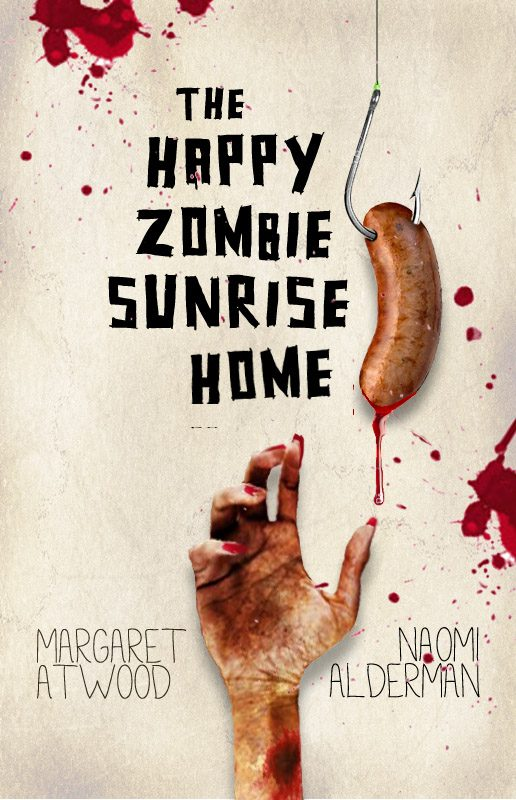
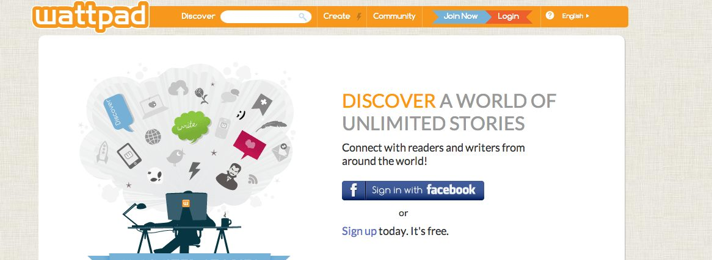
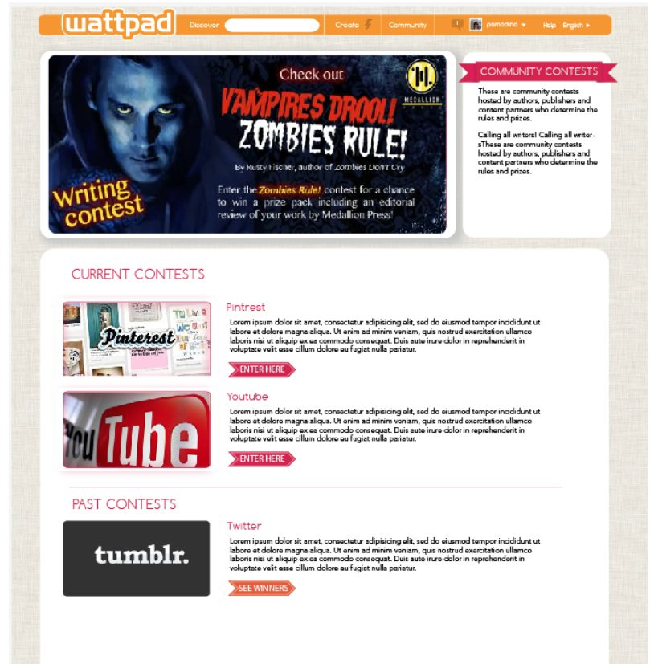
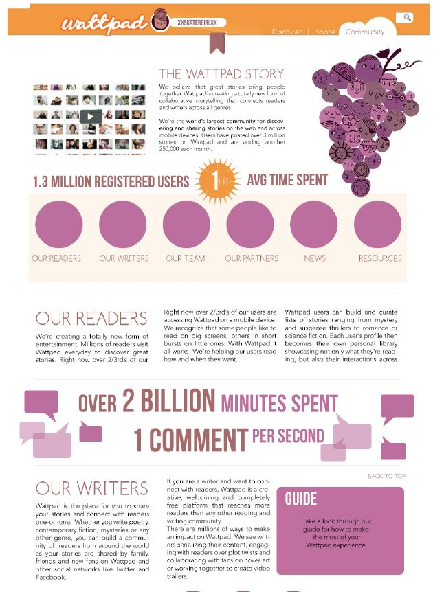
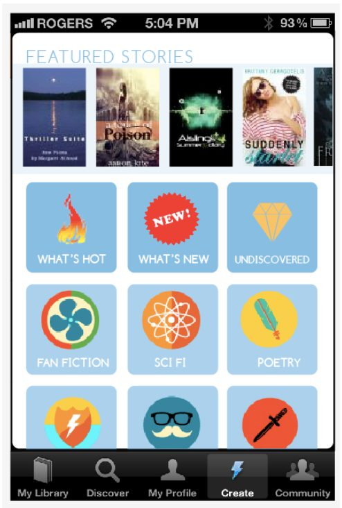
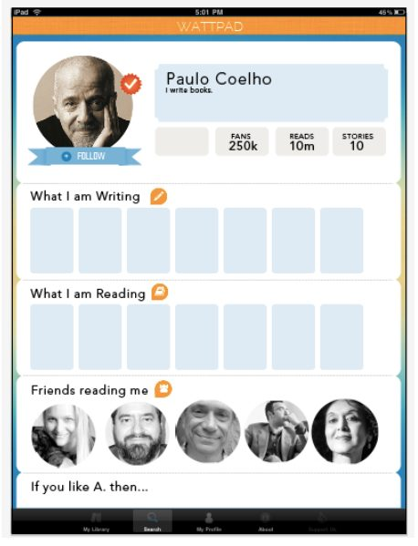
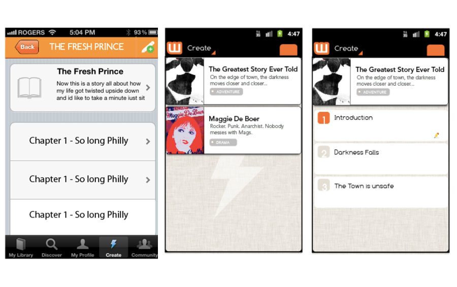

Overview
Life sure is fun when you are part of the largest community of Readers and Writers in the whole gosh darn world.







Design for the world’s largest community of readers and writers.
Life sure is fun when you are part of the largest community of Readers and Writers in the whole gosh darn world.






